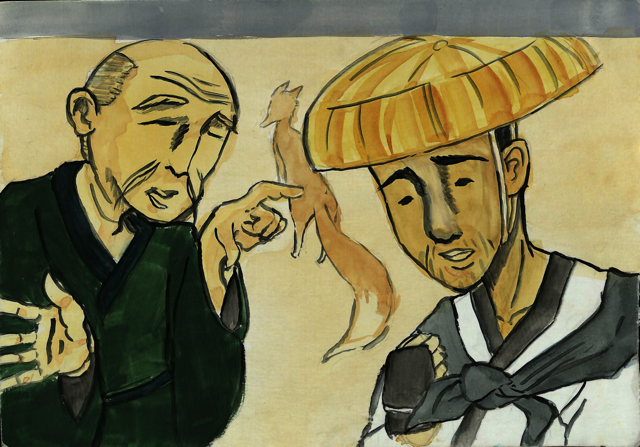
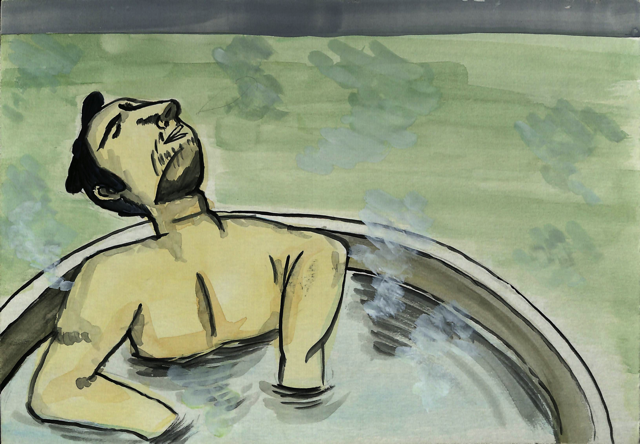
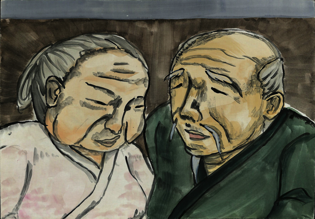
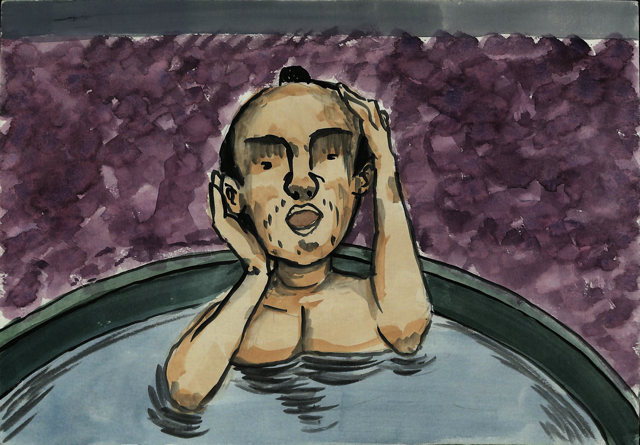
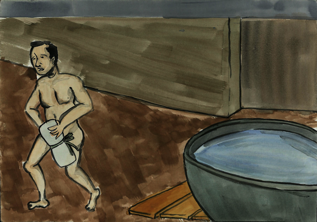
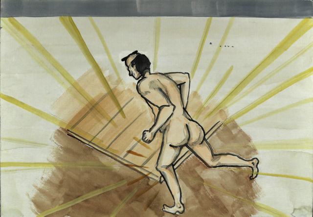
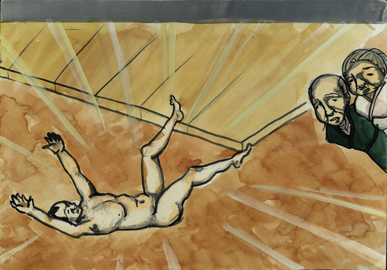
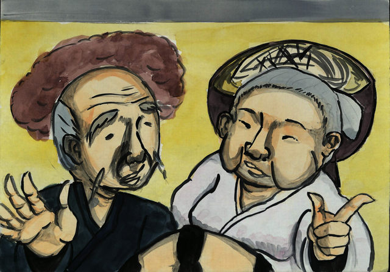
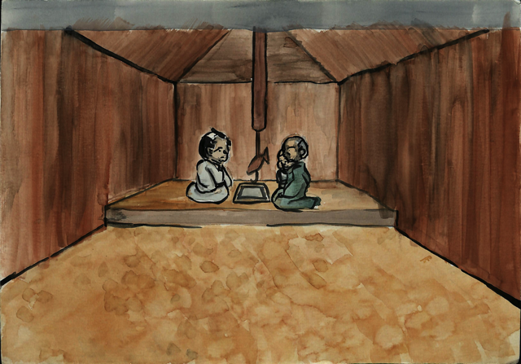

ぶったたきとはんごろし
作品紹介
- あらすじ
- 峠を前に日が暮れてしまった旅人は、親切な老夫婦の家に泊めてもらうことになった。旅人がお風呂をよばれていると、何やら老夫婦が相談する声が聞こえてくる。「ぶったたきにするか、はんごろしにするか」。それは旅人を殺す相談だった！？
- 制作年
- 2010
- 脚本
- 茨城大学紙芝居研究会
- 画
- 茨城大学紙芝居研究会
- 場面
- 11場面
ぶったたきとはんごろし 動画（準備中）
ぶったたきとはんごろし 画・脚本（脚本紛失）
#1

（画・欠落）
#2

#3

#4

#5

#6

#7

#8

#9
#10

#11

ぶったたきとはんごろし PDF
以下のリンクから、『ぶったたきとはんごろし』のPDFデータをダウンロードできます。
ダウンロードして印刷し、厚紙などに貼ってご利用下さい。
なお、『ぶったたきとはんごろし』には裏書きはなく、脚本は紛失しています。また、第1場面（表紙）が紛失しています。
『ぶったたきとはんごろし』は初期の平絵紙芝居をイメージして、大きさはB5サイズ、上部に抜きしろを取っています（誕生当時の平絵紙芝居は、ハガキ大、後にB5サイズに近いサイズになりました。当時は紙芝居舞台は使用せず、絵も右ではなく、上に抜いていました。そのために、絵の上部にそのための余白が取られていました。）